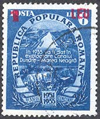

|
 The
first work on this canal started at the beginning of the 1950's. The
freshly installed Communist regime decided eliminating many people it
declared as enemies, and silencing the rest of the population at the same
time. The Canal was an immense concentration camp, with many thousands of
prisoners. During those times a "political" joke was sufficient for
rejoining the camps. Some of prisoners were not allowed to even use
overcoats during the very cold local winters nor to receive medical aid. A
lot of prisoners died of cold, inhuman working and living conditions, and
lack of medical attention. In 1951 the post issued in a set dedicated to
the 1951-1955 Five Year Plan (a plan that failed miserably, like all
others that followed). The
first work on this canal started at the beginning of the 1950's. The
freshly installed Communist regime decided eliminating many people it
declared as enemies, and silencing the rest of the population at the same
time. The Canal was an immense concentration camp, with many thousands of
prisoners. During those times a "political" joke was sufficient for
rejoining the camps. Some of prisoners were not allowed to even use
overcoats during the very cold local winters nor to receive medical aid. A
lot of prisoners died of cold, inhuman working and living conditions, and
lack of medical attention. In 1951 the post issued in a set dedicated to
the 1951-1955 Five Year Plan (a plan that failed miserably, like all
others that followed).
 This
sinister enterprise had many points of work. We speak here only
about one of them, named Peninsula. This forced work colony existed
between 1951-1977, and it was named also the Extermination Camp Nr. 1.
It was founded in the fall of 1950, in the North of the lake Siutghiol. on
a peninsula that enters the lake, 5 Km away from the village Valea Neagra
(Black Valley). Three years later the village was renamed The Light. About
8'000 people worked there (possible not only prisoners). The colony
functioned also after the Canal works were closed. This
sinister enterprise had many points of work. We speak here only
about one of them, named Peninsula. This forced work colony existed
between 1951-1977, and it was named also the Extermination Camp Nr. 1.
It was founded in the fall of 1950, in the North of the lake Siutghiol. on
a peninsula that enters the lake, 5 Km away from the village Valea Neagra
(Black Valley). Three years later the village was renamed The Light. About
8'000 people worked there (possible not only prisoners). The colony
functioned also after the Canal works were closed.
See above a post card, sent from the Colonia Peninsula, village Valea
Neagră, cenzored by a square cancel with the number 40, passed by the
distribution point Constanta the 8th of May.1952 and arrived at Calatele
the 11th of May.1952.From the text: please send 4 white undershirts, 2
pairs of tennis shoes or sandals, brush, tooth paste and laundry soap.
When you can, send also foodstuff (10 Kg). Stationery and info courtesy
of Dan Grecu, Romania. |
 We
show its original 6 lei value and the overprinted version of 1952,
dedicated to the Danube - Black Sea Canal (Scott 799-818, Michel
1276-1285). On the stamp one can read: "In the year 1955 the Danube -
Black Sea canal will be put into operation". Work was stopped in 1953 and,
after a parody of a trial, two state-employed engineers, who were not camp
internees, were shot for allegedly sabotaging the project. Interestingly
enough, for a long period (approximately 1955 - 1990) this stamp was
banned from the Romanian catalogues and from the state philatelic
commerce. It was a sore reminder of a never finished canal - a project
that those in power felt that it should be as soon as possible forgotten,
as well as the the bad memories related to it .
 Thirty
years later, more exactly in October 1975, the Romanian President
Ceausescu, a loyal follower of those criminals who preceded him as
rulers, restarted this megalomaniac project and, spending billions of
dollars that his starving country badly needed, succeeded in finishing the
works. At the time the project was restarted, water transportation had
already begun being replaced by road transport, a development that only
accelerated later and made the whole investment useless. The works started
on another route, south of the city of Constanta, and they were finished
in 1981. Later was finished also the part Poarta Alba - Midia - Navodari,
one that practically followed the route of the old Canal. Thirty
years later, more exactly in October 1975, the Romanian President
Ceausescu, a loyal follower of those criminals who preceded him as
rulers, restarted this megalomaniac project and, spending billions of
dollars that his starving country badly needed, succeeded in finishing the
works. At the time the project was restarted, water transportation had
already begun being replaced by road transport, a development that only
accelerated later and made the whole investment useless. The works started
on another route, south of the city of Constanta, and they were finished
in 1981. Later was finished also the part Poarta Alba - Midia - Navodari,
one that practically followed the route of the old Canal.
The souvenir sheet presented above on a FDC (1985, Scott 3270, Michel 216)
still evokes bad souvenirs to many Romanians. It shows the opening
ceremony in Cernavoda, where the former President and the General
Secretary of the Romanian Communist Party, Nicolae Ceausescu and his wife
Elena (both shot five years later) inaugurated the new canal. |